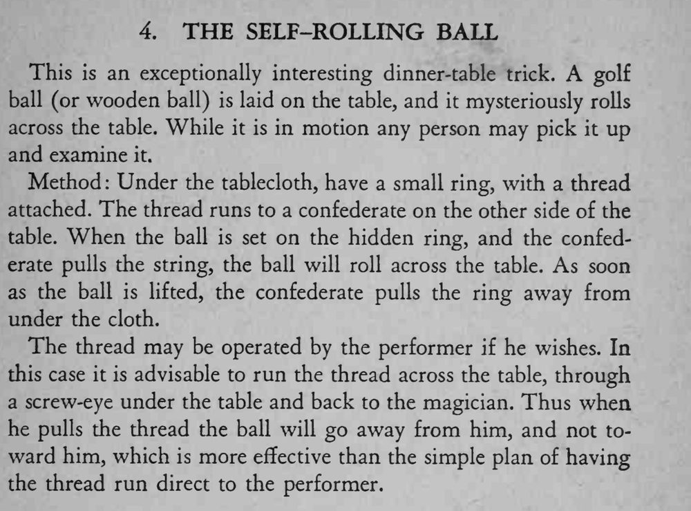

BALL TRICKS / 球类魔术 · 第 4 个魔术 · 原书 p.23
自己滚动的球
THE SELF-ROLLING BALL
| 道具 | 高尔夫球或木球、小环、细线、桌布、桌下螺丝眼（自己操作时） |
| 难度 | 入门 |
| 时长 | 2 分钟 |
| 场合 | 宴会 / 餐桌 |
| 需托 | 可不用（有托更方便） |
效果
高尔夫球（或木球）放在餐桌上，没人碰它，它却神秘地自己滚过桌面；滚动过程中观众还可以拿起球检查。
方法
- 桌布下面藏一个小环，环上系一根细线；线拉到桌子对面，由一位助手（托）握住。
- 把球放在桌布上、正对小环的位置。助手一拉线，小环带着球在桌布下滚过桌面。
- 观众把球拿起来的瞬间，助手立刻把线和小环从桌布下面抽回去。
- 也可以自己操作：细线从桌下绕过，穿过桌面下方的一枚螺丝眼，再回到自己手里。这样一拉，球是「远离」自己滚出去的，比线直接连在自己身上自然得多。
提示
最省事的版本需要一个托；想独立表演，就要事先改造桌子（螺丝眼）。

This is an exceptionally interesting dinner-table trick. A golf ball (or wooden ball) is laid on the table, and it mysteriously rolls across the table. While it is in motion any person may pick it up and examine it.
Method: Under the tablecloth, have a small ring, with a thread attached. The thread runs to a confederate on the other side of the table. When the ball is set on the hidden ring, and the confederate pulls the string, the ball will roll across the table. As soon as the ball is lifted, the confederate pulls the ring away from under the cloth.
The thread may be operated by the performer if he wishes. In this case it is advisable to run the thread across the table, through a screw-eye under the table and back to the magician. Thus when he pulls the thread the ball will go away from him, and not toward him, which is more effective than the simple plan of having the thread run direct to the performer.
BT-004 · 400 Tricks You Can Do · 中文重排版